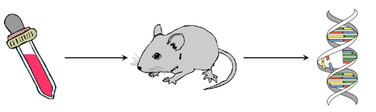

<!DOCTYPE html>
<html>
  <head>
    <title>Demo Exp</title>
    <script src="jspsych/dist/jspsych.js"></script>
    <script src="jspsych/dist/plugin-html-button-response.js"></script>
    <script src="jspsych/dist/plugin-survey-multi-choice.js"></script>
    <script src="jspsych/dist/plugin-survey-likert.js"></script>
    <script src="jspsych/dist/plugin-preload.js"></script>
    <script src="jspsych/dist/plugin-survey-text.js"></script>
    <link href="jspsych/dist/jspsych.css" rel="stylesheet" type="text/css" />
  </head>
  <body></body>
  <script>

///////////////////////////////////////////////////////////// some optional styling //////////////////////////////////////////////

var styles = `
  p {
    text-align: justify
  }
`
var styleSheet = document.createElement("style")
styleSheet.type = "text/css"
styleSheet.innerText = styles
document.head.appendChild(styleSheet)


/////////////////////////////////////////////////////////////////////////////////////////////////////////////////////////////////////////////////////////////////

var jsPsych = initJsPsych({
  experiment_width: 1000,
  on_finish: function(){
    window.location = "https://app.prolific.co/submissions/complete?cc=136BDB5F"
  }
}); // I'm using prolific to recruit subjects and the link above sends subjects back to prolific after the study with the study-specific completion code


/////////////////////////////////////////////////////////////////////////////////////////////////////////////////////////////////////////////////////////////////

//var condition = CONDITION; // a global variable that comes from 'cognition.run'; the platform I use to host experiments
var condition; // I usually also create an "internal" condition variable 

jsPsych.data.addProperties({condition: condition}); // add the condition to the data 

var subj_code; // a variable that later stores a random subject code

function makeid(length) {
    var result           = '';
    var characters       = 'ABCDEFGHIJKLMNOPQRSTUVWXYZabcdefghijklmnopqrstuvwxyz0123456789';
    var charactersLength = characters.length;
    for ( var i = 0; i < length; i++ ) {
      result += characters.charAt(Math.floor(Math.random() * 
 charactersLength));
   }
   return result;
} // this function creates a random subject code using the characters listed above

subj_code = makeid(12); // generate the actual code (12 strings)

console.log(subj_code); // give it back to the console

jsPsych.data.addProperties({subj_code: subj_code}); // add the code to the data 


////////////////////////////////////////////////////////////////////////////////////////////////////////////////////////////////////////////////////////////////////
///////////////////////////////////////////////////////////////////////////////////////////////////////////////////////////////////////////////////////////////////
/* create timeline */
var timeline = [];

/* preload images */
var preload = {
  type: jsPsychPreload,
  images: ['img/uni_org_color_li.png', 
           'img/illustration.png', 
           'img/N_32_025.png',
           'img/N_32_075.png', 
           'img/N_128_025.png', 
           'img/N_128_075.png']
}
timeline.push(preload);


//////////////////////// experiment-specific variables

var i = 0;
var likert_scale; 
var scale_orientation;


//////////////////////////////////////////////////////
/* A timeline variable for condition selection (just for offline demo of the study) */

var select = {
  type: jsPsychSurveyText,
  questions: [
    {
		prompt: 
		`
		<p><b>This study is in DEMO mode. <br> Select a condition: type in a number between 1 and 4.</b></p>
        <p>
            1 and 2: small sample size <br>
            3 and 4: large sample size <br>

            (orientation of the rating scale is counterbalanced between subjects)
        </p>
		`, 
		placeholder: 'number between 1 and 4',
		required: true,
		name: 'CondSel',
	},
  ],
	on_finish: function(data){
	condition = data.response.CondSel,
	console.log(condition);
	} 
}

//////////////////////////////////////////////////////
// feedback screen showing the condition that has been selected (used in demo mode)

var cond_selected = {
    type: jsPsychHtmlButtonResponse, 
    stimulus: function() {
        return "You chose to see Condition "+condition;
    }, 
    choices: ['Continue']
}; 

timeline.push(select, cond_selected); 


//////////////////////////////////////////////////////
/* First screen of the (non-demo version) experiment: asking for confirmations */

var confs = {
    type: jsPsychSurveyMultiChoice, 
    questions: [
        {
            prompt: "This study works properly only on Desktop PCs and Laptops, and not on Smartphones or Tablets. Before you proceed, please confirm that you take part via Desktop PC or Laptop.",
            name: 'DesktopConf',
            options: ['1: I confirm', '2: I do not confirm'], 
            required: true
        },
        {
            prompt: "For the scientific utility of the results, it is very important that you provide complete and careful responses. How seriously will you take your participation in the study?", 
            name: 'AttentConf', 
            options: ['1: I will take it seriously', '2: I will not take it seriously'], 
            required: true
        }, 
    ], 
    on_finish: function(data){ //I'm also using this screen to store some conditional variable values that get added to the data
        if (condition == 1) {
            scale_orientation = "not_cause_left"
            likert_scale = ["Certain that it does <u>not</u> cause the expression of the gene", " ", " ", " ", " ", "Fully uncertain", " ", " ", " ", " ", "Certain that it causes the expression of the gene"]; 
            sample_size = "N32"; 
        } else if (condition == 2) {
            scale_orientation = "not_cause_right";
            likert_scale = ["Certain that it causes the expression of the gene", " ", " ", " ", " ", "Fully uncertain", " ", " ", " ", " ", "Certain that it does <u>not</u> cause the expression of the gene"];
            sample_size = "N32";
        } else if (condition == 3) {
            scale_orientation = "not_cause_left";
            likert_scale = ["Certain that it does <u>not</u> cause the expression of the gene", " ", " ", " ", " ", "Fully uncertain", " ", " ", " ", " ", "Certain that it causes the expression of the gene"];
            sample_size = "N128";
        } else if (condition == 4) {
            scale_orientation = "not_cause_right";
            likert_scale = ["Certain that it causes the expression of the gene", " ", " ", " ", " ", "Fully uncertain", " ", " ", " ", " ", "Certain that it does <u>not</u> cause the expression of the gene"];
            sample_size = "N128";
      };
      jsPsych.data.addProperties({desktop_conf: data.response.DesktopConf, attent_conf: data.response.AttentConf, scale_orient: scale_orientation, sample_size: sample_size})
    }, 
    preamble: `
              <p></img></p>
              <p><b>Welcome to this experiment and thank you very much for your participation.</b></p>
              <p>Please note: This study contains memory and comprehension checks with which we aim to ensure that you correctly understood the central aspects of the study.</p>
        	  `
};

timeline.push(confs); 


/////////////////////////////////////////////////////////////////////////////////////////////////////////////////////////////
/* Scenario Instruction timeline variable */

var instruction = {
  type: jsPsychHtmlButtonResponse,
  stimulus: 
      `
      <p><i>Please read the following fictitious scenario thoroughly:</i></p>

      <p>
        A group of biologists working in a laboratory wants to find out whether certain chemicals (two different substances in total) cause particular genes (two different genes) to be expressed in mice.  
      </p>

      <p style="text-align:center;"></img></p>

      <p>They tested the effects of the two different chemicals on the two different genes in separate studies. 
        In each study, a different random sample of mice was injected with a different chemical and later examined to see how many mice expressed the studied gene. 
        Of course, a gene may sometimes be expressed for natural reasons in animals not injected with a chemical substance. 
        Thus, in each study the biologists also tested a second random sample of mice not injected with any chemical (a control sample).
      </p>

      <p>
        We will show you the results of the two studies that the biologists conducted and will ask you for each study how strongly you believe, based on the obtained results, 
        that the investigated chemical causes the expression of the studied gene.
      </p>

      <p><i>If you've studied the information thoroughly, please click "Continue" to proceed.</i></p>
      `,
    choices: ['Continue']
}

timeline.push(instruction);


//////////////////////////////////////////////////////////////////////////////////////////////////////////////////////////
/* comprehension test that subjects need to pass in order to proceed to the experiment's main phase */

var instr_check_first_part = {
    type: jsPsychSurveyMultiChoice, 
    name: 'instr_check', 
    questions: [
        {
        prompt: "<b>What do the biologists want to find out?</b>", 
        options: [  '1: Whether the expression of certain genes increases longevity in mice.', 
                    '2: Whether certain chemical substances cause certain genes to be expressed in mice.',
                    '3: Whether certain genes cause mice to consume certain chemical substances.', 
                    '4: Whether male mice react differently to certain chemical substances than female mice.'],
        required: true,
        name: 'goal_check'
        },
    ],
    preamble: `
        <p><i>
            You have learned the relevant information about the scenario. 
            Before you can proceed to the next part of the experiment, 
            we need to ensure that you've understood the scenario's central aspects. 
            Please answer the following comprehension-check questions. 
            You can only proceed once you've answered all check questions correctly. 
            If you answer any of the questions incorrectly, we'll show you the scenario description again.
        </i></p>
    `, 
    on_finish: function(data){
        i ++; 
        console.log("instr test rounds: "+ i); 
        if (data.response.goal_check == '2: Whether certain chemical substances cause certain genes to be expressed in mice.'){
            instr_check_1 = "correct"; 
        } else {
            instr_check_1 = "incorrect";
        }; 
        console.log("result instruction check: "+instr_check_1); 
        jsPsych.data.addProperties({instr_tests: i});
    },
};

timeline.push(instr_check_first_part); 


var instr_check_second_part = {
  type: jsPsychSurveyMultiChoice,
  name: 'instr_check_2',
  questions: [
    {
      prompt: "<b>How did the biologists test their question?</b>", 
      options: ['1: They conducted experiments with random samples of mice assigned to control and treatment groups.', 
                '2: They simply observed a single group of mice in which all mice got the experimental treatment.',
                '3: They did not conduct any study at all; they just did a literature search.'],
      required: true,
      name: 'method_check'
    },
  ],
  preamble: `
      <p><i>
        Please answer this second comprehension check question.
      </i></p>
    `,
  on_finish: function(data){
    if (data.response.method_check == '1: They conducted experiments with random samples of mice assigned to control and treatment groups.') {
        instr_check_2 = "correct";
    } else {
        instr_check_2 = "incorrect";
    };
    console.log("result instruction check: "+instr_check_2);
  },
};

timeline.push(instr_check_second_part);


/////////////////////////////////////////// handle the dynamics fo the comprehension test //////////////////////////////////////////
// screen if instr check was failed 
var instr_check_failed = {
  type: jsPsychHtmlButtonResponse,
  stimulus: 
    `
    <p><b>Unfortunately, you did NOT answer all comprehension check questions correctly. We will therefore show you the instructions again.</b></p>
    
    <p>Please click the button below to read the instruction again and repeat the test.</p>
    `
    ,
    choices: ['Back to instructions']
}


var loop = {
    timeline: [instr_check_failed, instruction, instr_check_first_part, instr_check_second_part], 
    loop_function: function(){
        if(instr_check_1 == "incorrect" || instr_check_2 == "incorrect"){
            return true; 
        } else {
            return false; 
        }
    }
}

var if_node = {
    timeline: [loop], 
    conditional_function: function(){
        if(instr_check_1 == "incorrect" || instr_check_2 == "incorrect"){
            return true;
        } else {
           return false;
        }
    }
}

timeline.push(if_node); // note: the if_node evaluates the status of the instruction test variable and, given that it has value "incorrect", triggers the loop node


// screen if instr check was passed
var instr_check_passed = {
  type: jsPsychHtmlButtonResponse,
  stimulus: 
    `
    <p><b>You answered all comprehension check questions CORRECTLY and can proceed to the next part of the study.</b></p>

    <p>On the following screens you will see the results of the experiments the biologists conducted. 
      For each experiment, we'll ask you how confident you are that the tested chemical causes the expression of the tested gene.</p>
    
    <p>Please click "Continue" to proceed.</p>
    `
    ,
    choices: ['Continue']
}

timeline.push(instr_check_passed);


////////////////////////////////////////////////////////////////// Test phase of the study /////////////////////////////////////////////////////////////////////////////////
////////////////////////////// Test Cases

var test_N32_025 = {
    type: jsPsychSurveyLikert, 
    questions: [
        {
            prompt: `<b>Based on the results of this study: How confident are you that the tested chemical causes the expression of the tested gene?</b>`, 
            name: 'rating_N32_025',
            labels: function(){return likert_scale}
        },
    ], 
    randomize_question_order: false, 
    preamble: 
    `
        <p>
        Below you see the results of the study in which the biologists tested whether chemical C-ATX® causes the expression of the gene X-PO4. 
        The biologists tested 32 mice in this study. The upper panel shows the mice injected with the chemical. The lower panel shows the untreated mice.
        </p>

        <p style="text-align:center;"></img></p>
    `, 
    on_finish: function(data){
        jsPsych.data.addProperties({rating_025: data.response.rating_N32_025}); 
    }, 
}; 


var test_N32_075 = {
  type: jsPsychSurveyLikert,
  questions: [
    {
      prompt: `<b>Based on the results of this study: How confident are you that the tested chemical causes the expression of the tested gene?</b>`, 
      name: 'rating_N32_025', 
      labels: function () {return likert_scale}
    },
  ],
  randomize_question_order: false,
  preamble:  
    `                 
      <p>
        Below you see the results of the study in which the biologists tested whether chemical C-JWQ® causes the expression of the gene X-PO4. 
        The biologists tested 32 mice in this study. The upper panel shows the mice injected with the chemical. The lower panel shows the untreated mice.
      </p>

      <p style="text-align:center;"></img></p>
    `
  ,
  on_finish: function(data){
	  jsPsych.data.addProperties({rating_075: data.response.rating_N32_075});
  },
};


var test_N128_025 = {
  type: jsPsychSurveyLikert,
  questions: [
    {
      prompt: `<b>Based on the results of this study: How confident are you that the tested chemical causes the expression of the tested gene?</b>`, 
      name: 'rating_N128_025', 
      labels: function () {return likert_scale}
    },
  ],
  randomize_question_order: false,
  preamble:
    `                 
     <p>
      Below you see the results of the study in which the biologists tested whether chemical C-ATX® causes the expression of the gene X-PO4. 
      The biologists tested 128 mice in this study. The upper panel shows the mice injected with the chemical. The lower panel shows the untreated mice.
    </p>

     <p style="text-align:center;"></img></p>
    `
  ,
  on_finish: function(data){
	  jsPsych.data.addProperties({rating_025: data.response.rating_N128_025});
  },
};


var test_N128_075 = {
  type: jsPsychSurveyLikert,
  questions: [
    {
      prompt: `<b>Based on the results of this study: How confident are you that the tested chemical causes the expression of the tested gene?</b>`, 
    name: 'rating_N128_075', 
    labels: function () {return likert_scale}
  },
  ],
  randomize_question_order: false,
  preamble: 
   `                 
    <p>
      Below you see the results of the study in which the biologists tested whether chemical C-JWQ® causes the expression of the gene X-PO4. 
      The biologists tested 128 mice in this study. The upper panel shows the mice injected with the chemical. The lower panel shows the untreated mice.
    </p>

    <p style="text-align:center;"></img></p>
  `
  ,
  on_finish: function(data){
	  jsPsych.data.addProperties({rating_075: data.response.rating_N128_075});
  },
};


// The different test cases should be presented in random order, which can be accomplished using shuffled vectors

var test_cases_N32 = [test_N32_025, test_N32_075];  // vector of the two screens shown in the N = 32 conditions
var test_cases_N128 = [test_N128_025, test_N128_075]; // vector of the two screens shown in the N = 128 conditions

var test_cases_N32_shuffled = jsPsych.randomization.repeat(test_cases_N32, 1); // create a new vector with a random order of the elements for N = 32
var test_cases_N128_shuffled = jsPsych.randomization.repeat(test_cases_N128, 1); // create a new vector with a random order of the elements for N = 128


// intermediate screen between the two test screens
var intermed = {
  type: jsPsychHtmlButtonResponse,
  stimulus: 
   `
    On the next screen you'll see the results of the second experiment in which the biologists tested a different chemical and a different gene in a new random sample of mice.
  `,
    choices: ['Continue']
}


// Now make conditional timeline variables that decide, based on sample size condition, which screens will be shown

var N32 = {
    timeline: [test_cases_N32_shuffled[0], intermed, test_cases_N32_shuffled[1]], 
    conditional_function: function(){
        if(sample_size == "N32"){
            return true;
        } else {
            return false;
        }
    }
} // if sample size is N32, then the vector elements listed will be pushed to the timeline

var N128 = {
    timeline: [test_cases_N128_shuffled[0], intermed, test_cases_N128_shuffled[1]],
    conditional_function: function(){
        if(sample_size == "N128"){
            return true;
        } else {
            return false;
        }
    }
} // if sample size is N128, then the vector elements listed will be pushed to the timeline

timeline.push(N32, N128); // this pushes the conditional timeline variables to the timeline (but the content that will be shown is specified within these variables)


//////////////////////////////////////////////////////////////// End of the main part of the study ////////////////////////////////////////////////////////////////////
/////////////////////////////////////// assessing demographics
var demogr_age = {
  type: jsPsychSurveyText,
  name: 'Age_query',
  questions: [
    {
      prompt: `<p><i>You're almost done with the study, we'd just like to ask you for some additional information.</i></p>
                <p>How old are you?</p>`, 
      placeholder: 'Age as a number', 
      required: true,
      name: 'Age'
    },
  ],
  on_finish: function(data){
	  jsPsych.data.addProperties({age: data.response.Age});
  },
}


var demogr_gender = {
  type: jsPsychSurveyMultiChoice,
  name: 'gender_query',
  questions: [
    {
      prompt: "Please indicate with which gender you identify.", 
      options: ['1: male', '2: female', '3: non-binary', '4: prefer not to say'],
      required: true,
      name: 'Gender'
    },
  ],
  on_finish: function(data){
	  jsPsych.data.addProperties({gender: data.response.Gender});
  },
};

timeline.push(demogr_age, demogr_gender);


/////////////////////////////////////// giving subjects the chance to report any technical issues
var tech_issues = {
  type: jsPsychSurveyText,
  name: 'Tech_issue_query',
  questions: [
    {
      prompt: 'In the text field below you can report any errors that you came across during the study (e.g., technical issues, layout problems, spelling errors, errors in program logic and flow, etc.).', 
      rows: 10, 
      columns: 100, 
      required: false,
      name: 'Tech_issue_report'
    },
  ],
  on_finish: function(data){
	  jsPsych.data.addProperties({tech_issues: data.response.Tech_issue_report});
	  console.log(data.response.Tech_issue_report)
  },
}
timeline.push(tech_issues);


///////////////////////////////////// debriefing screen 

var debriefing = {
  type: jsPsychHtmlButtonResponse,
  stimulus: 
    `
    </img>
    <p><b>Thank you for taking part in this study!</b></p>
  
    <p>The aim of this experiment is to find out how people infer causal relations from observed statistical regularities. 
    If you are interested in further details or if you have any questions or comments concerning the experiment, 
    feel free to contact me (Simon Stephan) under <i>sstepha1@uni-goettingen.de</i>
    
    <p>To ensure you receive your reward, please click the button below to return to the Prolific website:</p>
    `
    ,
    choices: ['Finish study']
};
timeline.push(debriefing);


/////////////////////////////////////////////////////////////////
/* start the experiment */
jsPsych.run(timeline);

  
</script>
</html>